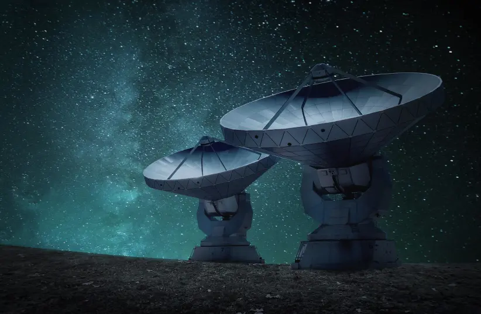

Artist’s impression of a fast radio burst (FRB) traveling through space and reaching Earth.
(photo credit: ESO/M. Kornmesser/Flickr)
Artist’s impression of a fast radio burst (FRB) traveling through space and reaching Earth.
(photo credit: ESO/M. Kornmesser/Flickr)
cientists have managed to discover a new mysterious burst of radio waves from space, known as a fast radio burst (FRB) that is raising new questions. The findings surrounding this mysterious phenomenon designated FRB 190520 were published Wednesday in a study in the peer-reviewed academic journal Nature.
Scientists release first analysis of rocks
What are FRBs? FRBs are a phenomenon in the field of radio astronomy that refers to a very short burst of radio pulse associated with the release of a very large amount of energy. What causes them is unknown, though it seems to be a high-energy astrophysical process of some sort.
 Radio telescopes, which are used to find radio broadcasts from space (Illustrative). (credit: PIXABAY)This field of study is still relatively new, with the first FRB having been discovered in 2007. Several FRBs have been discovered since then, but some are especially strange. One of these, in particular, FRB 180916, pulsates on a regular basis every 16.35 days. Another FRB that is particularly noteworthy is FRB 121102. Discovered in 2016, this radio burst was a major breakthrough in the field of study because its location was pinpointed. At the time, researchers, writing in articles in Nature and the Astrophysical Journal Letters, wrote that it had originated from a dwarf galaxy over three billion light-years from Earth.
The new FRB What makes this new mysterious FRB so interesting is that it, too, was able to be pinpointed. FRB 190520 was first identified by a five-hundred-meter Aperture Spherical radio Telescope (FAST) in China in November 2019, with the burst itself having taken place on May 20 of that year. Scientists made use of other telescopes, such as the National Science Foundation’s Karl G. Jansky Very Large Array (VLA), to better study FRB 190520. In 2020, VLA observations were able to pinpoint its location. Then, using the Subaru telescope in Hawaii, they were able to pinpoint its origin near another dwarf galaxy three billion light-years away. But this raises all kinds of questions, especially when examining the similarities and differences between these two FRBs and all others.